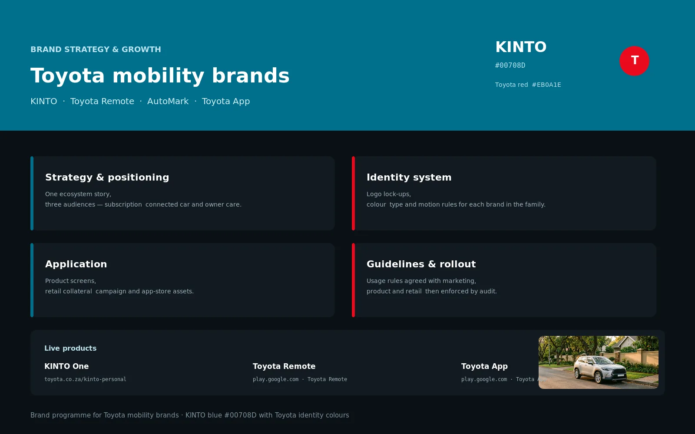
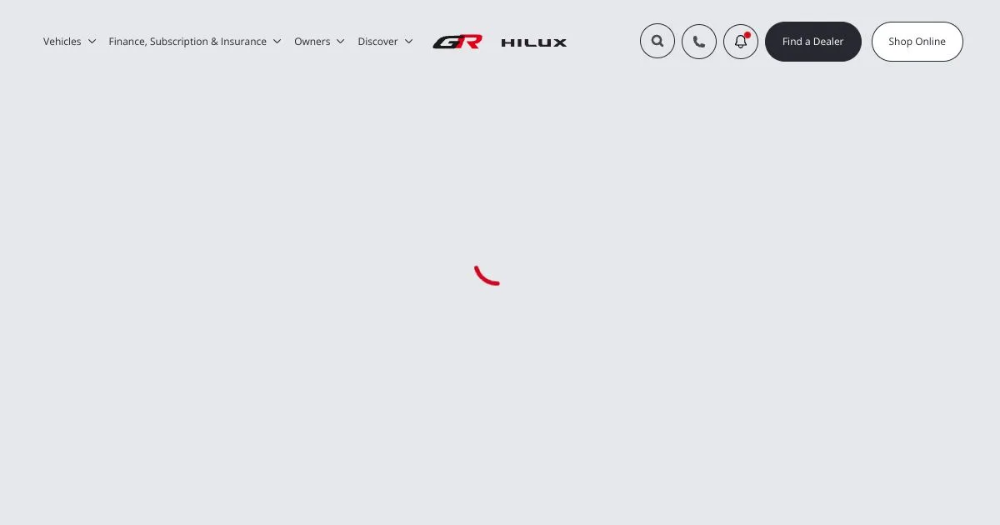

Toyota Brand Programme
Toyota South Africa was taking three mobility products to market at once, and each was drawing its own identity. I set the positioning, built the identity system and wrote the rules, so KINTO, the Toyota App and Toyota Remote could launch in the same voice.
Context and stakes
Mobility services in the Toyota ecosystem grew product by product. KINTO handled subscription and sharing, the Toyota App was the customer front door, and Toyota Remote handled connected-car control. Each had its own visual language, tone and idea of what the customer should feel.
Customers could not tell they were dealing with one company, and each product had to earn trust from scratch. The brand existed in campaigns and disappeared the moment a customer logged in.
What would have happened if nothing changed: every new service would start its identity work from zero.
My role and boundaries
I was the senior brand and product designer on the programme. I set the positioning, built the identity system that holds the brands together without flattening them, and wrote the rules for applying it in product, campaign and retail.
Three decisions
1. Strategy and positioning before visual work
Each service got a brand platform: who it is for, what it promises, what it is not, and the language that carries it. Positioning was agreed in writing before any visual work started.
2. An identity built as a system, not a logo
The identity covers the wordmark and lockups, colour with defined roles, a type family with a hierarchy, spacing and layout rules, iconography and motion, all specified so different teams reach the same result.
3. Apply the system in the product first
Applying the system in product interface tokens and components is what stopped the brand disappearing after the login screen. Campaign, social and dealership materials followed the same system.
Process
Audience work, competitive framing and a brand platform per service.
Wordmark, colour, type, spacing, iconography and motion.
Product, campaign and retail.
A brand book, usage rules and rollout sessions with marketing, product and retail.
Outcome and evidence
The brands now share a positioning framework and an identity system covering type, colour, spacing, tone and motion. The same tokens are applied in the app as in campaign and retail, so a new service launches as an application of the brand rather than a new identity project.
- KINTO, the Toyota App and Toyota Remote share an identity, a tone and a component language.
- Type, colour and motion are specified in a form a product team can apply directly.
- Marketing and product kept the system running after the programme closed.
No quantitative measures are recorded for this programme.
Visuals
